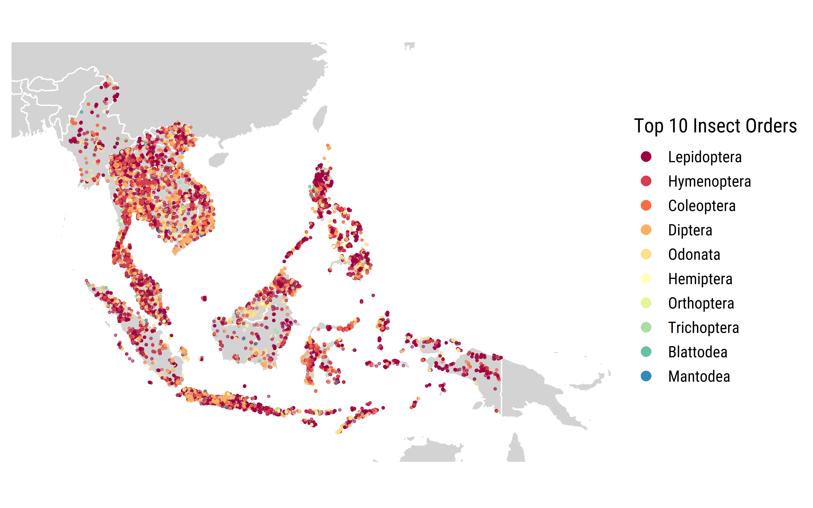

Gallery
DataViz
Dung beetle-feeding trophic networks depicting dung beetle-dung interactions in a Singapore forest fragment
Data obtained from: Ong et al. 2020
Map of GBIF insect species records from 2001 to 2020

Data obtained with rgbif.
Observed taxonomic and functional metrics for dung beetle communities attracted to baited pitfall traps and flight interception traps across three habitat types in a Bornean rainforest

Source: Ong et al. 2021